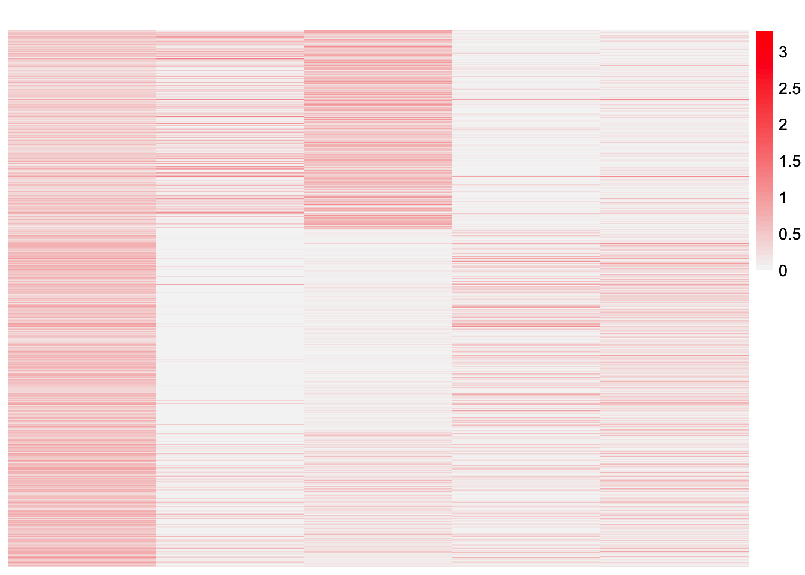
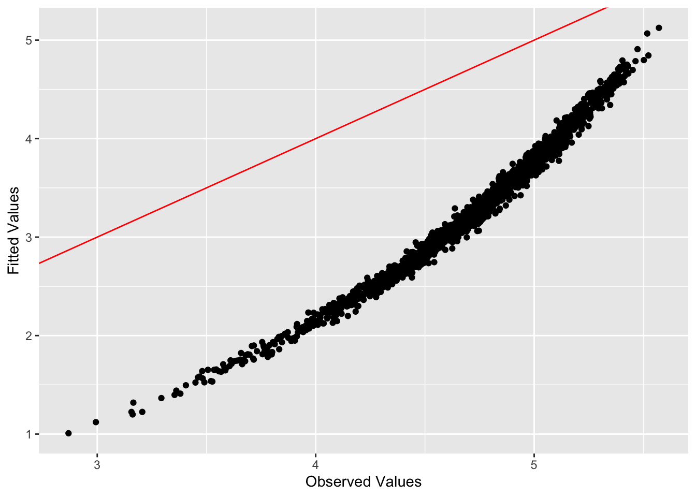

EBCD-subtype-exploration
Annie Xie
2024-04-24
Last updated: 2025-01-13
Checks: 7 0
Knit directory: EBCD_GBCD_comparison/
This reproducible R Markdown analysis was created with workflowr (version 1.7.1). The Checks tab describes the reproducibility checks that were applied when the results were created. The Past versions tab lists the development history.
Great! Since the R Markdown file has been committed to the Git repository, you know the exact version of the code that produced these results.
Great job! The global environment was empty. Objects defined in the global environment can affect the analysis in your R Markdown file in unknown ways. For reproduciblity it’s best to always run the code in an empty environment.
The command set.seed(20240229) was run prior to running
the code in the R Markdown file. Setting a seed ensures that any results
that rely on randomness, e.g. subsampling or permutations, are
reproducible.
Great job! Recording the operating system, R version, and package versions is critical for reproducibility.
Nice! There were no cached chunks for this analysis, so you can be confident that you successfully produced the results during this run.
Great job! Using relative paths to the files within your workflowr project makes it easier to run your code on other machines.
Great! You are using Git for version control. Tracking code development and connecting the code version to the results is critical for reproducibility.
The results in this page were generated with repository version 17a31ae. See the Past versions tab to see a history of the changes made to the R Markdown and HTML files.
Note that you need to be careful to ensure that all relevant files for
the analysis have been committed to Git prior to generating the results
(you can use wflow_publish or
wflow_git_commit). workflowr only checks the R Markdown
file, but you know if there are other scripts or data files that it
depends on. Below is the status of the Git repository when the results
were generated:
Ignored files:
Ignored: .DS_Store
Ignored: .Rhistory
Ignored: code/.DS_Store
Ignored: data/.DS_Store
Untracked files:
Untracked: analysis/gbcd-tree-experiments.Rmd
Untracked: analysis/star-simulations.Rmd
Untracked: code/gbcd_functions.R
Unstaged changes:
Modified: analysis/driftr-comparison.Rmd
Modified: code/drift_functions.R
Note that any generated files, e.g. HTML, png, CSS, etc., are not included in this status report because it is ok for generated content to have uncommitted changes.
These are the previous versions of the repository in which changes were
made to the R Markdown
(analysis/EBCD-subtype-exploration.Rmd) and HTML
(docs/EBCD-subtype-exploration.html) files. If you’ve
configured a remote Git repository (see ?wflow_git_remote),
click on the hyperlinks in the table below to view the files as they
were in that past version.
| File | Version | Author | Date | Message |
|---|---|---|---|---|
| Rmd | 17a31ae | Annie Xie | 2025-01-13 | Clean up analyses for data with subtype effects |
| html | 27ae153 | Annie Xie | 2024-06-12 | Build site. |
| Rmd | 845fd53 | Annie Xie | 2024-05-08 | Add normal and subtype simulations |
| html | 845fd53 | Annie Xie | 2024-05-08 | Add normal and subtype simulations |
Introduction
In this analysis, we aim to explore EBCD’s behavior with regard to subtype-specific factors. This analysis was motivated by the observation that EBCD does not always find all of the subtype-specific factors. We are interested in discerning when EBCD uncovers all of the subtypes vs. only a subset of the subtypes.
Package and Functions for Analyses
library(ggplot2)
library(cowplot)
library(RColorBrewer)
library(ggrepel)
library(pheatmap)
library(gridExtra)
#library(Seurat)
library(Matrix)
library(ebnm)
library(flashier)
library(magrittr)
library(ashr)
library(irlba)
library(reshape2)
library(patchwork)
library(fastTopics)
#source("~/Documents/PhD 3/Research/EBCD/gbcd-workflow/code/fit_cov_ebnmf.R")plot_heatmap <- function(L, title = "", colors_range = c("gray96", "red")){
### define the color map
cols <- colorRampPalette(colors_range)(49)
brks <- seq(min(L), max(L), length=50)
plt <- pheatmap(L, show_rownames = FALSE, show_colnames = FALSE, cluster_rows = FALSE, cluster_cols = FALSE, color = cols, breaks = brks, main = title)
return(plt)
}source("~/Documents/PhD 3/Research/EBCD/ebcd_functions.R")Experiment: scRNA-seq data with only subtype GEPs (no shared GEP)
In the previous simulation, I simulated data using two subtype factors plus one shared factor. In that setting, EBCD was only able to find one of the subtype factors. In this experiment, I simplify the the data generation by only including the subtype factors in the factor and loading matrix, i.e. we are getting rid of the shared factor. I am curious to see if EBCD will be able to identify both subtype factors in this setting.
Code to simulate data
#simulation code
library(Matrix)
library(splatter)
library(scran)
library(seqgendiff)##################################### simulate the single cell RNA-seq data for 20 replicates ##################################################
### load in the Splatter model parameters estimated from one PDAC dataset
#Once we have a set of parameters we are happy with we can use splatSimulate to simulate counts. If we want to make small adjustments to the parameters we can provide them as additional arguments, alternatively if we don’t supply any parameters the defaults will be used:
params <- readRDS("~/Documents/PhD 3/Research/EBCD/gbcd-workflow/simulations/simparams.rds")
### define the function to normalize and log transform the UMI counts
fnc_norm <- function(X){
### calculate the cell-specific library size
clusters <- quickCluster(X)
si <- calculateSumFactors(X, clusters=clusters)
### log transform and normalize single cell count data
norm.dat <- log(10*(median(si)*t(X)/si + 0.1))
}
### simulate single cell RNA-seq data
for(iter in 1:1){
### set the seed
set.seed(iter)
### simulate a homoegenous population of cells
dat <- splatSimulate(params, nGenes = 5000, batchCells = 1600, seed = iter, out.prob = 0.005, lib.loc = params@lib.loc + log(2.5))
X <- counts(dat)
gene.info <- as.data.frame(rowData(dat))
### simulate L
L <- matrix(0, nrow=ncol(X), ncol=2)
L[1:800, 1] <- 1
L[801:1600, 2] <- 1
#L[sample(1:nrow(L), 600, replace=FALSE), 3] <- runif(600, min=0.4, max=2)
### simulate F
F <- matrix(0, nrow=nrow(X), ncol=2)
idx.gene <- sort(which(rowSums(X!=0) >= 300))
F[idx.gene[1:1300], 1] <- pmax(rnorm(1300, log2(3), 0.5), log2(1.5))
F[idx.gene[1301:2600], 2] <- pmax(rnorm(1300, log2(3), 0.5), log2(1.5))
#F[idx.gene[2601:3100], 3] <- pmax(rnorm(500, log2(3), 0.5), log2(1.5))
F[gene.info$OutlierFactor > 1, ] <- 0
### simulate patterns of gene expression variation according to L and F using binomial thinning
X.mod <- thin_diff(mat = as.matrix(X), design_fixed = L, coef_fixed = F)
X.thin <- as(X.mod$mat, "sparseMatrix")
### remove genes with very low expression levels
idx.gene <- rowSums(X.thin!=0) >= 32
X.thin <- X.thin[idx.gene,]
F <- F[idx.gene,]
colnames(X.thin) <- paste0("cell", 1:ncol(X.thin))
rownames(X.thin) <- paste0("gene", 1:nrow(X.thin))
rownames(L) <- colnames(X.thin)
colnames(L) <- paste0("k", 1:ncol(L))
rownames(F) <- rownames(X.thin)
colnames(F) <- colnames(L)
### normalize and log transform the UMI counts
norm.dat <- fnc_norm(X.thin)
### save the simulated data
data2 <- list(X = t(X.thin), Y = norm.dat, L = L, F = F)
saveRDS(data2, file=paste0("~/Desktop/EBCD_GBCD_comparison_data/iter", iter, "_only_subtype_data2.rds"))
rm(data2, X, X.mod, L, F)
}Visualization of data
data2 <- readRDS('~/Desktop/EBCD_GBCD_comparison_data/iter1_only_subtype_data2.rds')This is a heatmap of the loadings.
plot_heatmap(data2$L)
| Version | Author | Date |
|---|---|---|
| 845fd53 | Annie Xie | 2024-05-08 |
This is a heatmap of the factor matrix.
plot_heatmap(data2$F)observed.vals2 <- data2$Y %*% t(data2$Y)/ ncol(data2$Y)This is a heatmap of the Gram matrix.
plot_heatmap(observed.vals2)EBCD Analysis
Hypothesis
I hypothesize that EBCD will be able to recover both subtype factors from this dataset because the effect from the subtype seems to be more apparent in the Gram matrix. (In retrospect, this set up is similar to the set up where we only looked at patient effects, and EBCD worked in that setting. Therefore, we expect EBCD to also work in this setting.)
Analysis
I will load in previously saved results.
fit.ebcd2 <- readRDS('~/Desktop/EBCD_GBCD_comparison_data/iter1_only_subtype_data2_ebcd.rds')This is the code to run the EBCD analysis. I’ve already loaded in the saved results.
set.seed(295)
fit.ebcd2 <- ebcd(X = t(data2$Y), Kmax = 5, ebnm_fn = ebnm::ebnm_generalized_binary)This is a plot of the scaled estimate of \(L\). This estimate is scaled such that the infinity norm for each column is 1, i.e. the maximum value for each column is 1.
plot_heatmap(t(t(fit.ebcd2$EL)/apply(fit.ebcd2$EL,2, max)))
transformed_Z2 <- transform_ebcd_Z(t(data2$Y), fit.ebcd2)This is a heatmap of the estimate for the factor matrix.
plot_heatmap(transformed_Z2, colors_range = c('blue', 'red'))
| Version | Author | Date |
|---|---|---|
| 845fd53 | Annie Xie | 2024-05-08 |
This is a heatmap of the positive part of the factor matrix estimate.
#heatmap of the positive part of the factor matrix
plot_heatmap(pmax(transformed_Z2, 0))
| Version | Author | Date |
|---|---|---|
| 845fd53 | Annie Xie | 2024-05-08 |
This is a heatmap of the (absolute value of) the negative part of the factor matrix estimate.
#heatmap of the negative part of the factor matrix
plot_heatmap(pmin(transformed_Z2, 0), colors_range = c('red','gray96'))ebcd2.fitted.vals <- fit.ebcd2$EL %*% t(fit.ebcd2$EL)This is the L2 norm of the difference between the observed values and the fitted values.
sum((observed.vals2 - ebcd2.fitted.vals)^2)[1] 5928.804This is the L2 norm of the difference between the off-diagonal entires of the observed values and the fitted values.
sum((observed.vals2 - ebcd2.fitted.vals)^2) - sum((diag(observed.vals2) - diag(ebcd2.fitted.vals))^2)[1] 2572.532This is a plot of (a subset of) the fitted values vs. observed values:
ggplot(data = NULL, aes(x = c(as.matrix(observed.vals2))[samp.vals], y = c(ebcd2.fitted.vals)[samp.vals])) + geom_point() + xlab('Observed Values') + ylab('Fitted Values') + geom_abline(slope = 1, intercept = 0, color = 'red')
| Version | Author | Date |
|---|---|---|
| 845fd53 | Annie Xie | 2024-05-08 |
This is a plot of the diagonal entries of the fitted values vs. the diagonal entries of the observed values:
ggplot(data = NULL, aes(x = diag(as.matrix(observed.vals2)), y = diag(ebcd2.fitted.vals))) + geom_point() + xlab('Observed Values') + ylab('Fitted Values') + geom_abline(slope = 1, intercept = 0, color = 'red')
| Version | Author | Date |
|---|---|---|
| 845fd53 | Annie Xie | 2024-05-08 |
This is a plot of the progression of the objective function
ggplot(data = NULL, aes(x = c(1:length(fit.ebcd2$vec.obj)), y = fit.ebcd2$vec.obj)) + geom_line()This is the number of iterations that the backfit did before the convergence criterion was satisfied:
length(fit.ebcd2$vec.obj)[1] 617Correlation of EBCD estimate to true loadings matrix
We compute the correlation of the EBCD estimate of the loadings matrix to the true loadings matrix.
correlation_EBCD_true2 <- cor(fit.ebcd2$EL, data2$L)
colnames(correlation_EBCD_true2) <- c('Subtype 1 GEP', 'Subtype 2 GEP')correlation_EBCD_true2 Subtype 1 GEP Subtype 2 GEP
[1,] -0.1671241 0.1671241
[2,] 0.9818979 -0.9818979
[3,] 0.9741844 -0.9741844
[4,] -0.9144690 0.9144690
[5,] -0.9371316 0.9371316Observations
In the EBCD loadings estimate, factor 2 had a high positive correlation with the subtype 1 factor from the true loadings matrix. In addition, factor 5 had a high positive correlation with the subtype 2 factor from the true loadings matrix. The first factor, to me, looks like a baseline factor since it has positive loadings on most of the samples. In addition, the code below shows that the first factor is highly correlated with size factor.
This is the correlation between the the first column of the EBCD loadings and the size factor.
cor(fit.ebcd2$EL[,1], rowSums(data2$Y))[1] 0.9827066In this setting, EBCD was able to find both subtype factors which suggests that it is capable of doing so. I am not sure why it struggles to find both when a shared factor is introduced into the loading and factor matrices. Perhaps it is related to the strength of the subtype effect versus the strength of the shared effect.
I also wanted to note that I tried this experiment with a different factor matrix (but same loadings matrix) that kept the number of active genes in each factor of the factor matrix to 75. In those results, EBCD was able to recover the second subtype, but did not recover the first subtype. I’m guessing it’s because of the signal to noise ratio. If you plot the Gram matrix, the subtype effect is not very evident, especially compared to the Gram matrix from this set up. Therefore, I’m guessing it is more difficult in general to pick up the subtype effects.
sessionInfo()R version 4.3.2 (2023-10-31)
Platform: aarch64-apple-darwin20 (64-bit)
Running under: macOS Sonoma 14.4.1
Matrix products: default
BLAS: /Library/Frameworks/R.framework/Versions/4.3-arm64/Resources/lib/libRblas.0.dylib
LAPACK: /Library/Frameworks/R.framework/Versions/4.3-arm64/Resources/lib/libRlapack.dylib; LAPACK version 3.11.0
locale:
[1] en_US.UTF-8/en_US.UTF-8/en_US.UTF-8/C/en_US.UTF-8/en_US.UTF-8
time zone: America/Chicago
tzcode source: internal
attached base packages:
[1] stats graphics grDevices utils datasets methods base
other attached packages:
[1] fastTopics_0.6-192 patchwork_1.2.0 reshape2_1.4.4 irlba_2.3.5.1
[5] ashr_2.2-66 magrittr_2.0.3 flashier_1.0.53 ebnm_1.1-34
[9] Matrix_1.6-5 gridExtra_2.3 pheatmap_1.0.12 ggrepel_0.9.6
[13] RColorBrewer_1.1-3 cowplot_1.1.3 ggplot2_3.5.1 workflowr_1.7.1
loaded via a namespace (and not attached):
[1] tidyselect_1.2.1 viridisLite_0.4.2 farver_2.1.2
[4] dplyr_1.1.4 fastmap_1.2.0 lazyeval_0.2.2
[7] promises_1.3.0 digest_0.6.37 lifecycle_1.0.4
[10] processx_3.8.4 invgamma_1.1 compiler_4.3.2
[13] rlang_1.1.4 sass_0.4.9 progress_1.2.3
[16] tools_4.3.2 utf8_1.2.4 yaml_2.3.10
[19] data.table_1.16.0 knitr_1.48 labeling_0.4.3
[22] prettyunits_1.2.0 htmlwidgets_1.6.4 scatterplot3d_0.3-44
[25] plyr_1.8.9 Rtsne_0.17 withr_3.0.1
[28] purrr_1.0.2 grid_4.3.2 fansi_1.0.6
[31] git2r_0.33.0 colorspace_2.1-1 scales_1.3.0
[34] gtools_3.9.5 cli_3.6.3 rmarkdown_2.28
[37] crayon_1.5.3 generics_0.1.3 RcppParallel_5.1.9
[40] rstudioapi_0.16.0 httr_1.4.7 pbapply_1.7-2
[43] cachem_1.1.0 stringr_1.5.1 splines_4.3.2
[46] parallel_4.3.2 softImpute_1.4-1 vctrs_0.6.5
[49] jsonlite_1.8.9 callr_3.7.6 hms_1.1.3
[52] mixsqp_0.3-54 horseshoe_0.2.0 trust_0.1-8
[55] plotly_4.10.4 jquerylib_0.1.4 tidyr_1.3.1
[58] glue_1.8.0 ps_1.7.7 uwot_0.1.16
[61] stringi_1.8.4 Polychrome_1.5.1 gtable_0.3.5
[64] later_1.3.2 quadprog_1.5-8 munsell_0.5.1
[67] tibble_3.2.1 pillar_1.9.0 htmltools_0.5.8.1
[70] truncnorm_1.0-9 R6_2.5.1 rprojroot_2.0.4
[73] evaluate_1.0.0 lattice_0.22-6 highr_0.11
[76] RhpcBLASctl_0.23-42 SQUAREM_2021.1 httpuv_1.6.15
[79] bslib_0.8.0 Rcpp_1.0.13 deconvolveR_1.2-1
[82] whisker_0.4.1 xfun_0.48 fs_1.6.4
[85] getPass_0.2-4 pkgconfig_2.0.3